About the dataset
SynShapes is the first dataset composed of synthetic images paired with exact edge map annotations. The images are composed of geometric shapes, with randomness applied to selected parameters, including color, quantity, size, and spatial position. Fixed parameters include the image resolution (1280×720), the total number of images (125), the edge thickness (1 pixel), and the noise type (speckle). The dataset generation process requires less than two minutes. The set of geometric primitives comprises: ellipses, circles, rectangles, triangles, regular polygons, and irregular polygons.
Also, in order to reduce the synthetic-to-real domain gap, the Fourier Domain Adaptation (FDA) method* was applied.
* Yang, Yanchao, and Stefano Soatto. "FDA: Fourier Domain Adaptation for Semantic Segmentation." Proceedings of the IEEE/CVF Conference on Computer Vision and Pattern Recognition. 2020.
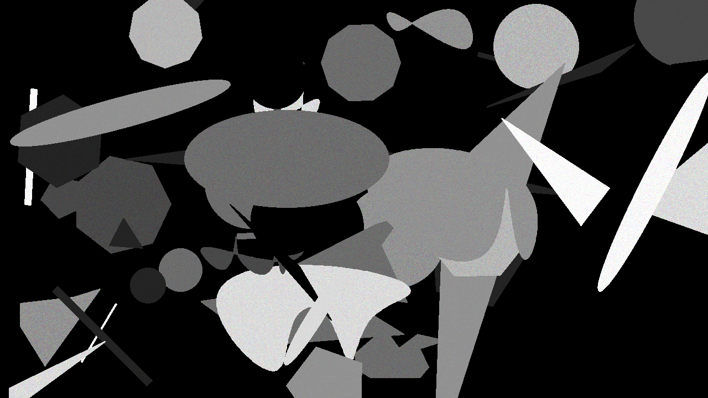
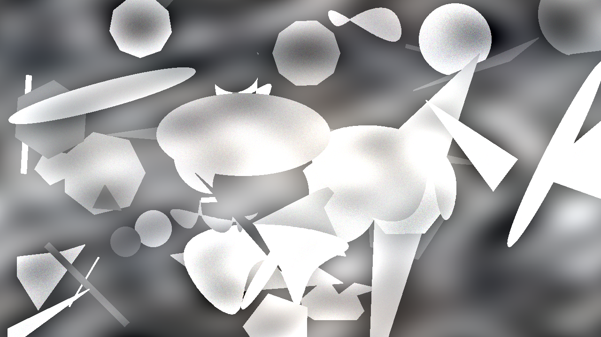
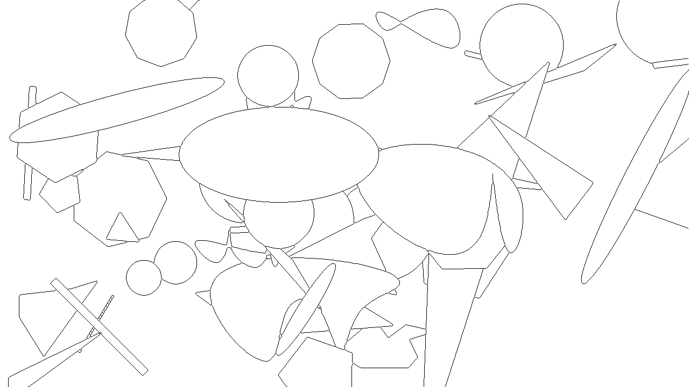
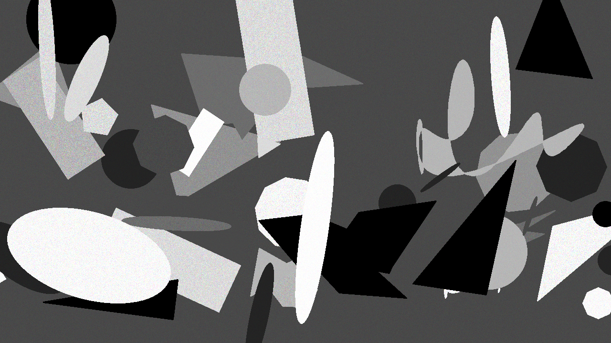
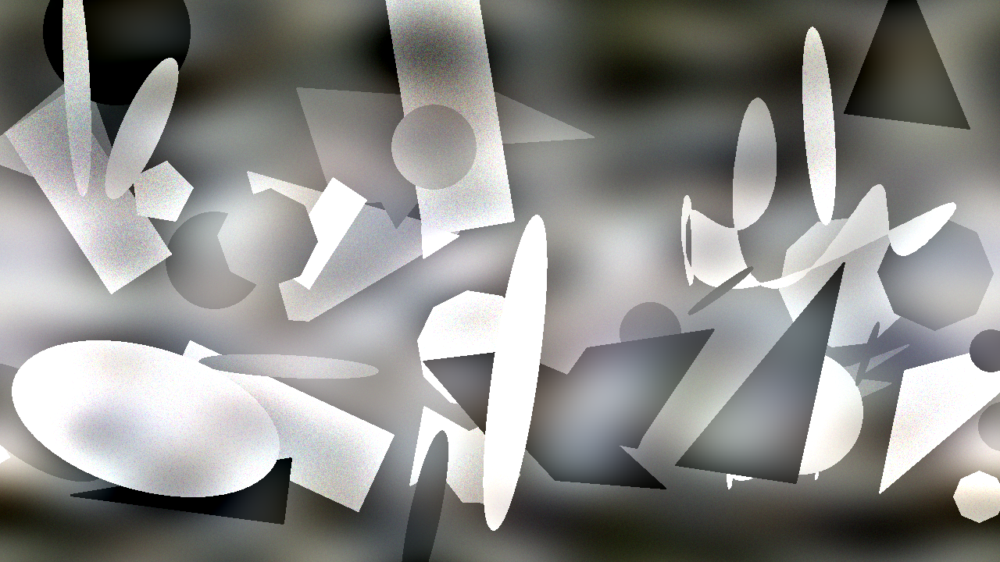
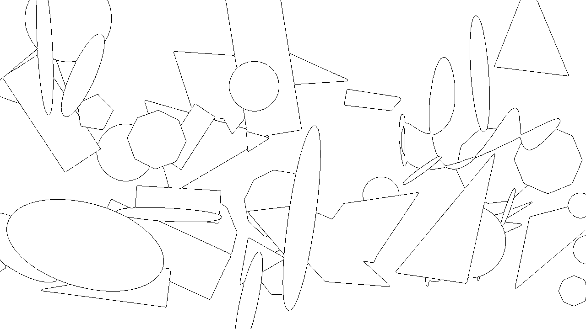
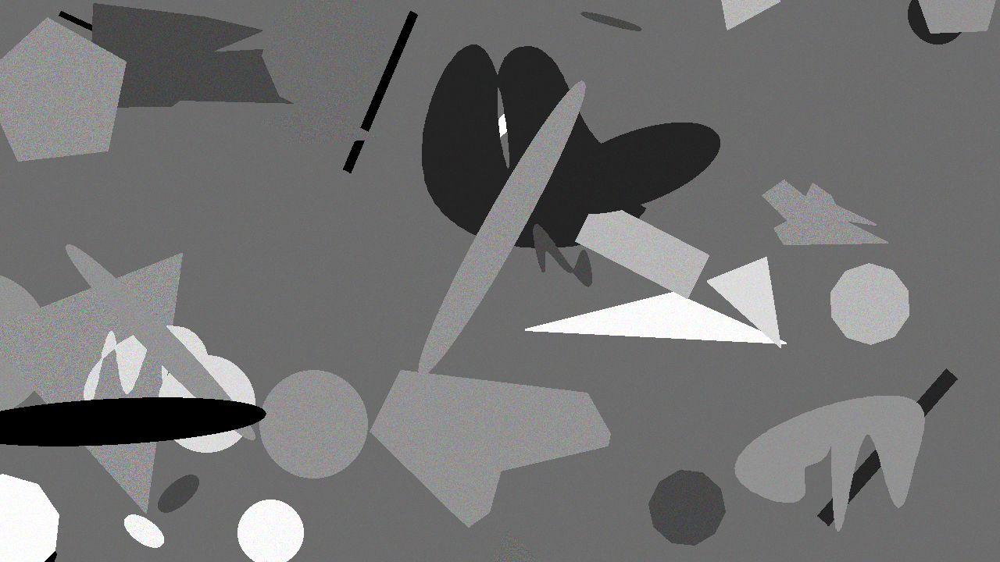
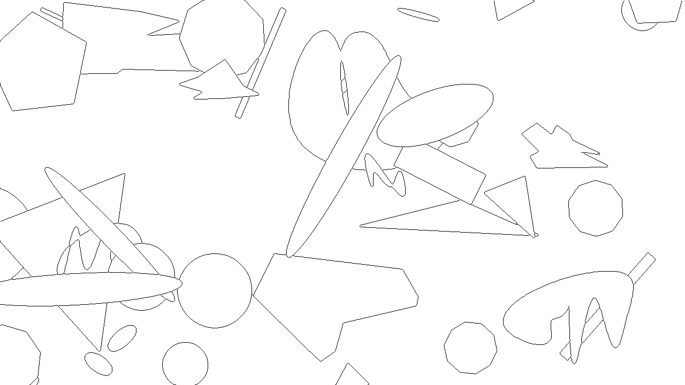
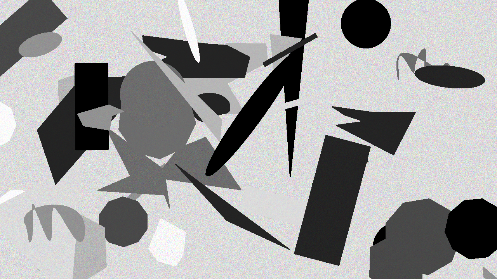
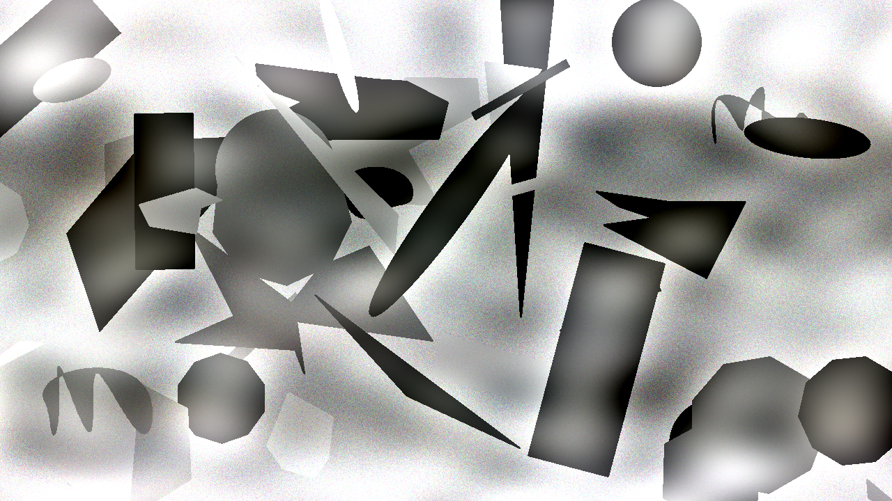
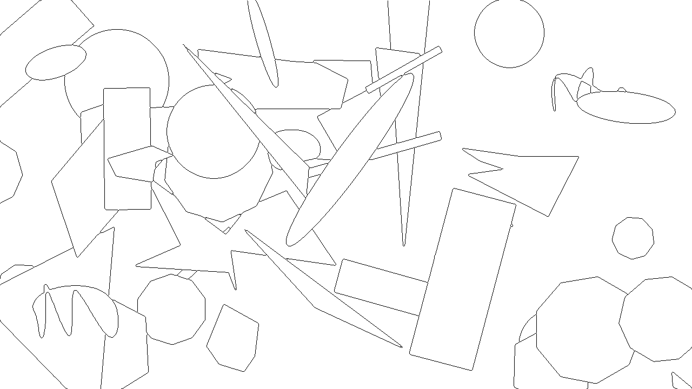
Paper
BibTeX
If you use the SynShapes dataset, please cite the following paper:
@conference{visapp26,
author={Guillermo A. Castillo and Xavier Soria and Angel Sappa},
title={SynShapes: A Synthetic Image-Annotation Dataset for Edge Detection},
booktitle={Proceedings of the 21st International Conference on Computer Vision Theory and Applications - Volume 2: VISAPP},
year={2026},
pages={794-802},
publisher={SciTePress},
organization={INSTICC},
doi={10.5220/0014632400004084},
isbn={978-989-758-804-4},
issn={2184-4321},
}